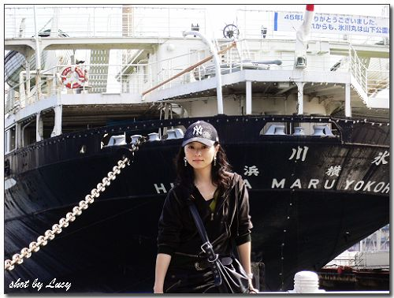
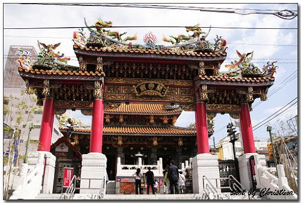

横滨/日本之行 @ May 10, 2007
横滨，日语：横浜市, よこはまし，英文：Yokohama。与东京相距很近,车程不到1小时。横滨是日本最大的海港之一，也是世界第三大港。横滨在东京北面约20公里处，仅次于东京，为日本第二大城。县政府所在地。2002年世界杯赛在横滨举行。5月3日游览了横滨的海滨公园和中华街，恰好海滨公园正要举行建港150周年的庆典活动，许多着装一致的孩子活跃在公园的各个角落，阳光明媚，海水显得尤为清澈，有带着狗狗来游玩的，有许多拿着专业摄像器材的老人...横滨的生活给我留下灿烂的印象。推荐一篇《看日本横滨如何发展港城经济》便于对其城市的发展进行了解。




横滨中华街是日本最大的华人街，素有“小中国”之称，当年国父孙逸仙先生逃亡至日本争取奥援时，中国城曾是他最坚强的后盾，目前则是亲共派与亲国民党派壁垒分明。撇开政治不谈，这里有200间以上的中国料理店并立其间，足以满足贪吃的胃。


在横滨中华街

横滨关帝庙始建于1876年，其后连遭1923年日本关东大地震和1945年二战美机大空袭而两次损毁。战后已是第三次重建，不幸又于1986年遭受火灾而全部烧毁，奇怪的是仅剩关公神像完好无恙，侨胞们都认为是关公“显灵”，希望两岸同胞携手团结。

关帝庙里请香处的中国阿姨，如果我没记错的话，她称自己是浙江人，每年都要回国扫墓。见到我们很高兴，问我们从哪儿来。
5 Responses to “横滨/日本之行”
2007-05-11
关公神像完好无恙，这么神奇!
2007-05-11
那条龙拍的不错! 色彩还原的很好
2007-05-11
横滨在东京北面约20公里处
应该在东京南面。具体说是东京站的西南方向。
2007-05-13
想问下你用的什么相机和镜头？
2007-05-14
喜欢你一身黑的装扮，透着温柔的坚强，^^
Leave A Reply
存档只读，评论已关闭。